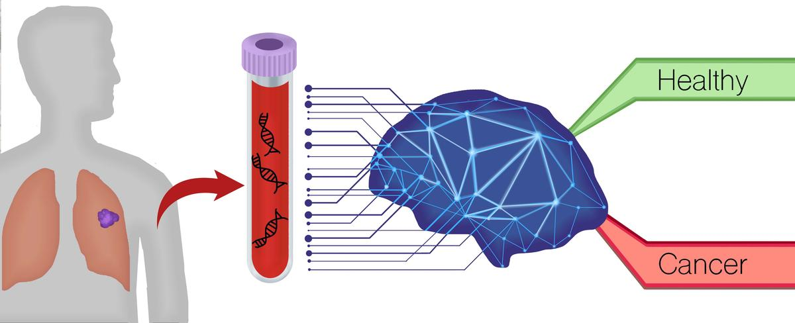
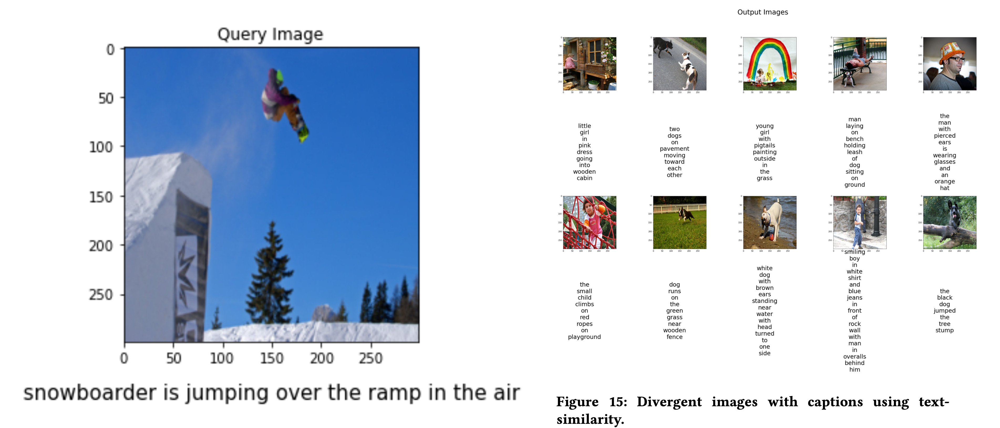

Hi. I'm Lawrence
An aspiring Data Analyst / Data Scientist with adequate education and skills, and a contemplative coder. Inspired by real-world problems.
An aspiring Data Analyst / Data Scientist with adequate education and skills, and a contemplative coder. Inspired by real-world problems.
My name is Lawrence Thanakumar Rajappa. I am a Software Engineer
with 6 years of experience in developing applications using Java, Spring Framework,
MySQL/MongoDB, Python, REST, Flask, and Angular in banking domain. My hunger for knowledge
and determination to turn data into action has made myself
a "forever student", eager to both build on my academic foundations in Artificial Intelligence
and Data Science through a master degree program in Computer Science at Linköping University, Sweden
and continued online courseworks
(MOOC) and gain practical experience
in Data Science and Statistical modelling by working on my own projects.
As a master graduate to be, I am seeking an opportunity as either a Graduate Data Analyst or a Graduate Data Scientist
to utilise my academically gained expertise in data analysis and statistical modelling in an
organisation and helping the organisation to derive good business decisions.
Worked on creating new features and bug fixing on existing features in the existing applications using Java, Spring boot framework, REST and MySQL. Moreover, automated repetitive tasks using Python and CRON jobs in Agile framework.
Worked on proof of concepts using Python, Angular, and R (RShiny).
Worked on creating new features and bug fixing on existing features in 4 banking applications using Java, Spring framework, REST, Python, Apache Spark, and MySQL.
Worked on “Forum Sentry”, a gateway tool to set the rules and regulations, and security for validating and protecting the banking systems from the incoming credit card payment requests from the users.
Took AI & Data Mining as a specialisation and studied courses such as NLP, Text Mining, Big data and analytics, Probability & Statistics, Machine learning, etc. and did a thesis project in the Oncology domain using Bioinformatics and Machine learning using Python and R.
Learned data science techniques, visualization, Statistics, Machine learning algorithms, and databases with sample case studies.
Learned courses such as DBMS, Programming in C, Operating System, Programming in Java, etc. as foundational courses to build my career in the field of Computer Science.
Mathieu Vannoorenberghe
Manager, Sogeti Sverige AB, Sweden
Mobile: +46 073-077-6880
Email: mathieu.vannoorenberghe@sogeti.se
Dr. Saira Banu Atham
Professor, Presidency University, Bangalore, India
Mobile: +91 98841 27780
Email: saira.atham@gmail.com
A master thesis project to classify genes as either cancer or immune using RNA-Sequence data obtained from Colorectal cancer patients.
A customized survival analysis tool similar to survival analysis function in SPSS was created at Jenny Persson group, Department of Molecular Biology, Umeå University, Sweden.

A course project (TDDE16 - Text Mining) on extractive summarization and category classification of news articles using Machine learning, NLP, and Text Mining.

A course project (TDDE19 - Advanced Project Course - AI and Machine Learning) on finding a set of divergent images for a given query image and generating captions for those using Deep learning.
A course project (TD1078 - Sports Analytics) on selecting basketball players based on their previous performances, assigning court positions for the selected players, and predicting their salaries based on their previous performances using Machine learning.

A final project (PG Diploma in Business Analytics & Data Science) on detecting malaria using blood smeared images using Deep learning for people in rural areas of Africa - a cost effective and quick solution to detect malaria.
Email: |
lawrencethanakumar@gmail.com |
Mobile: |
+46 076-117-7614 |
Social: |
LinkedIn GitHub |